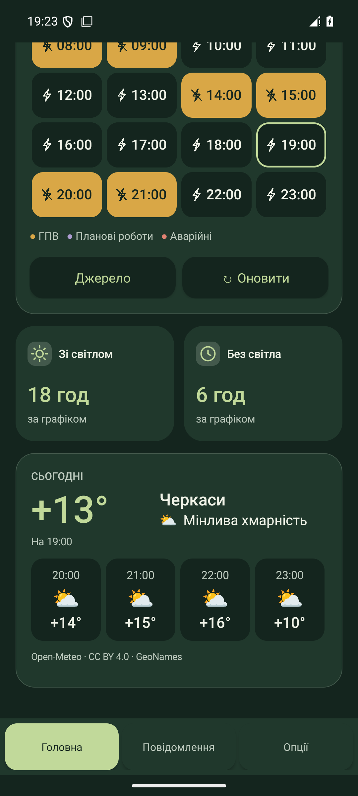
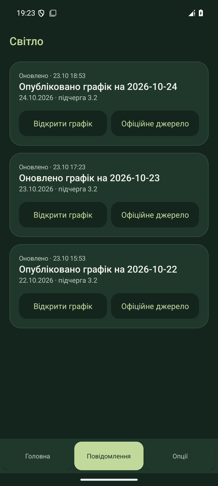

Доба як на долоні
Кожна плитка — одна година. Повне або часткове заповнення показує інтервали відключення, а відлік у шапці — найближчу зміну.
Погодинні · планові · аварійніДля Христинівки та Черкащини
Щоб встигнути зі своїми планами. Графік відключень, нагадування й погода — у простому застосунку для твого телефона.

На кожен день
Для дому, роботи й рідних. Обери адресу один раз — і перевіряй графік тоді, коли зручно.
Кожна плитка — одна година. Повне або часткове заповнення показує інтервали відключення, а відлік у шапці — найближчу зміну.
Погодинні · планові · аварійніЗбережи дім, роботу чи адресу батьків. Перемикайся зі списку: графік, віджети й погода слідують за активною адресою.
До 10 збережених адресДивись, скільки годин буде зі світлом і без нього. Гортай погодинну погоду та відкривай завтра, щойно графік опублікують.
Прогноз погоди на 24 годиниЗазирни всередину
Актуальна версія застосунку. Натисни на знімок, щоб роздивитися деталі.
Погодинні плитки, поточна черга та швидке перемикання адрес.
Тривалість відключень і прогноз для населеного пункту твоєї адреси.

Найновіше — зверху. Історія за сім діб і перехід до офіційного джерела.

Знімки зроблено у «Світло» 1.3.3. Адреса, погода та години на них — демонстраційні дані, не актуальний прогноз відключень.
23 жовтня 2026 · Оновлення зі збереженням адрес і віджетів.
Три прості кроки
Потрібен телефон з Android 8.0 або новішим. Застосунок встановлюється з APK, без Play Market.
Натисни «Завантажити» й відкрий Svitlo-1.3.3.apk на телефоні.
За запитом Android дозволь встановлення з браузера або файлового менеджера. Після цього дозвіл можна вимкнути.
Філія, населений пункт, вулиця, будинок. Підтвердь знайдену адресу й за бажанням дай їй ім’я.
Вже користуєшся «Світлом»? Встанови нову версію поверх попередньої. Видаляти застосунок і заново додавати віджети не потрібно.
Коротко про важливе
Без складних налаштувань.
І без прихованих умов.
Так. Без реклами, підписок, прихованих платежів і реєстрації.
З офіційних публікацій і адресних сервісів АТ «Черкасиобленерго». «Світло» — незалежний застосунок, розробник не представляє оператора. Графік на завтра доступний після публікації.
Застосунок показує дані оператора, а не вимірює напругу в будинку. Незаплановані відключення можливі. Якщо оновлення недоступне, зберігається останній графік із відповідною позначкою.
Номер рахунку вводити не потрібно: ти обираєш адресу з довідника. Підтверджену адресу можна зберегти і без повернутого сервісом рахунку. Погода визначається за населеним пунктом активної адреси — доступ до геолокації телефона для цього не потрібен.
Адреси, налаштування та кеші зберігаються на телефоні. Необхідні адресні запити надсилаються оператору. Погодний сервіс отримує назву населеного пункту або його координати, але не рахунок, вулицю чи номер будинку. Власного сервера аналітики немає.
За замовчуванням приблизно раз на годину. Можна обрати 30, 60 або 120 хвилин та оновити вручну. Android може відкладати фонові перевірки; для нових даних потрібен інтернет.
Прогноз надає Open-Meteo за ліцензією CC BY 4.0, довідник місць — GeoNames. На головній доступні наступні 24 години для активної адреси.
Поки що «Світло» доступне лише для Android 8.0 і новіших. APK-файл не встановлюється на iPhone.
Світло для своїх
Завантаж собі та поділися цією сторінкою з рідними.